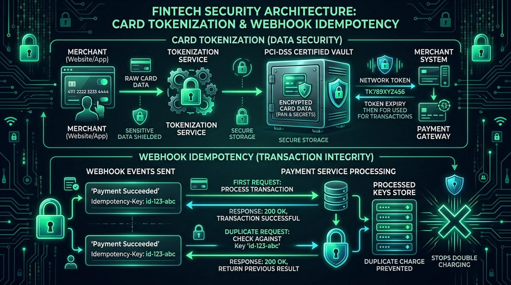

You order food on Zomato, enter your 3-digit CVV, enter an OTP, and within 3 seconds, your order is placed. But under the hood, your transaction travels through a complex global web involving Merchant Aggregators, Payment Gateways, Card Networks (Visa/Mastercard), Tokenization Vaults, and Acquiring vs. Issuing Banks.

Figure 1: Complete online credit card payment lifecycle across Customer App, Payment Gateway (Stripe/Razorpay), Card Networks (Visa/Mastercard), and Issuing Bank.
1. The Key Actors in Card Processing
When you purchase something online using a card, five distinct entities communicate in real time:
- Cardholder (You): The buyer presenting the card credentials.
- Merchant (Zomato/Amazon): The store selling the product or service.
- Payment Gateway & Aggregator (Razorpay / Stripe): The secure PCI-DSS certified pipeline that encrypts card data and orchestrates payment flows.
- Card Networks (Visa / Mastercard / RuPay / Amex): The high-speed switching networks routing requests between banks.
- Issuing Bank (e.g. HDFC / Chase): The bank that issued your card, provides your credit line, and authenticates OTP.
- Acquiring Bank (Merchant's Bank): The bank that receives money on behalf of Zomato/Amazon.
2. What is Card Tokenization? (Why Merchants Don't Store Card Numbers)

Figure 2: Card Tokenization (PCI-DSS certified vault) & Webhook Idempotency preventing duplicate charges.
Under modern security regulations (like the RBI Tokenization Mandate and PCI-DSS Level 1), merchants are strictly prohibited from saving your 16-digit card number (PAN) or CVV on their servers.
Instead, when you save a card on Zomato:
- Zomato requests a Token from the Card Network (Visa/Mastercard) for your specific device.
- Visa generates an encrypted surrogate string (Token: e.g.
tok_9f81a7b6c5d4). - Zomato only stores this Token and the last 4 digits (e.g.
**** **** **** 1234). If Zomato's database ever gets breached, hackers get useless tokens that cannot be used anywhere else!
3. 3D Secure 2.0 (3DS2): The Anti-Fraud Engine
3DS 2.0 is the protocol that triggers the familiar OTP popup screen or silent biometric approval:
- Frictionless Flow: If you are ordering groceries from your usual phone on your home WiFi for ₹200, the bank's AI risk engine scores it as low-risk and approves it instantly without an OTP!
- Challenge Flow: If a sudden ₹50,000 transaction happens from a new foreign IP address, the bank enforces a 2FA OTP challenge.
4. The Danger of Double Debits: Webhook Idempotency
What happens if your WiFi disconnects right when you enter your OTP? Your bank debits ₹500, but Zomato's app shows "Loading..." and fails. Why doesn't the system charge you again when you retry?
// Example of an Idempotent Charge Request with Stripe / Razorpay
const chargeResponse = await paymentGateway.charges.create(
{
amount: 50000, // ₹500.00 in paise
currency: "INR",
customer_token: "tok_9f81a7b6c5d4",
description: "Zomato Order #ZOM-98124"
},
{
idempotencyKey: "ORDER_UUID_98124_ATTEMPT_1" // Unique Idempotency Key
}
);
The merchant attaches a unique idempotencyKey to the transaction. If the app retries the exact same request 5 times due to poor network, the payment gateway detects the key and returns the original successful receipt instead of charging your card 5 times!
5. Authorization vs. Settlement ($T+1$/$T+2$)
A card transaction happens in two distinct temporal stages:
- Authorization (Instant): The bank locks ₹500 from your available credit limit and returns an Auth Code. No actual money moves yet!
- Settlement (24-48 hours later): At midnight, all authorized transactions are batched, cleared through Visa/Mastercard, and wired to the merchant’s bank account on a $T+1$ or $T+2$ business day schedule.
6. Summary & Key Takeaways
- Tokenization: Merchants store network tokens, never raw card numbers or CVVs.
- 3DS 2.0: Risk-based 2FA authentication separating frictionless vs challenged flows.
- Idempotency: Guarantees that network retries never double-charge the user.
- Two-Step Execution: Instant real-time authorization followed by batch settlement in $T+1$ days.
💬 Join the Discussion
Have you ever had a transaction fail where money got debited but the merchant didn't receive it? Let's discuss payment reconciliation on LinkedIn!